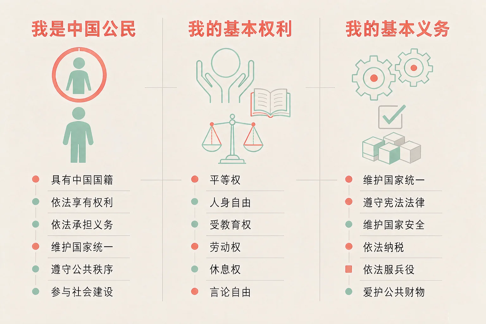
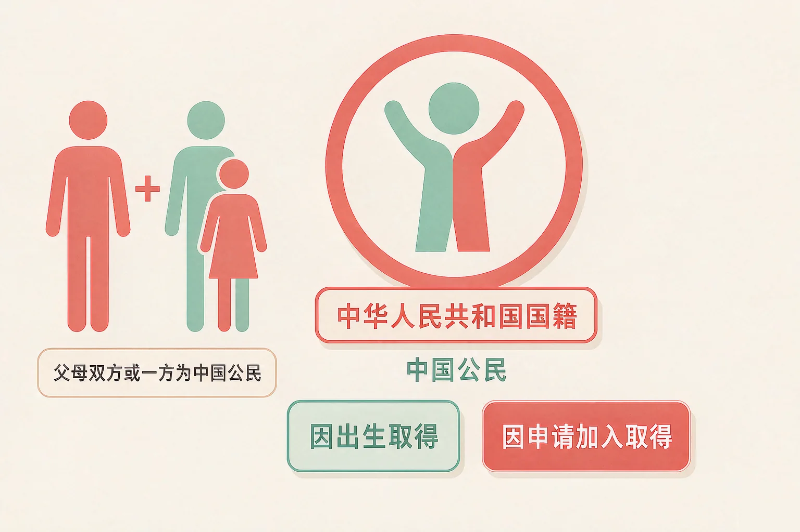
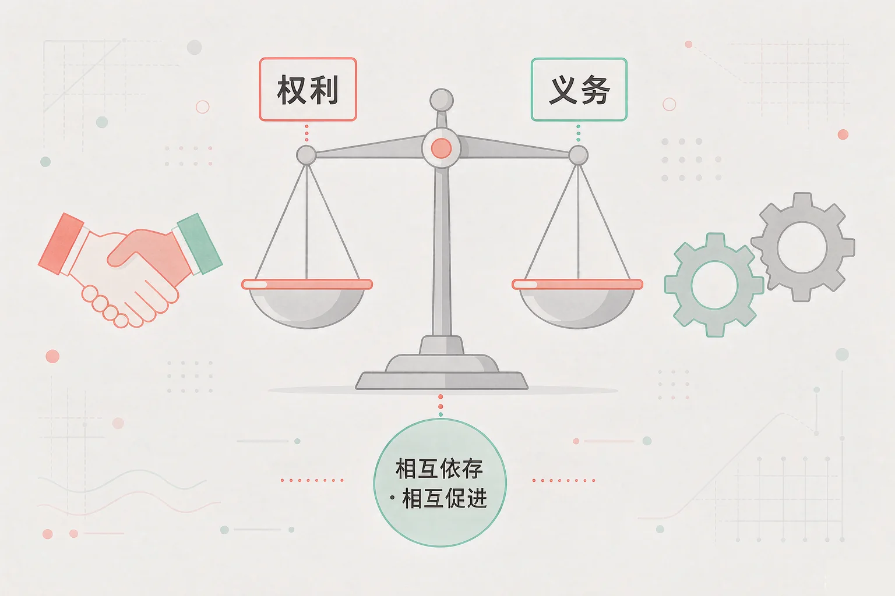

Gallery
v1.0.0 · skill v7.22.0
小学六年级 · 中华优秀传统文化
「我是中国公民」这句话，到底意味着什么？

选一个你真正想知道的问题，后面的活动都会围着它转。
选择或输入后，这节课会围绕你的问题展开。
先凭直觉选一个，选完立刻看到解释——错了也没关系，正好知道要重点听哪里。
1. 下面哪一句话说准了「我国公民」的意思？
我国公民，是指具有中华人民共和国国籍的人。国籍把一个人和一个国家连在一起。错因提醒：常见错误是把「在我国居住」和「具有我国国籍」搞混了；公民身份也不是长大以后才有的，我们已经是小公民了。
2. 我国国籍的取得主要有哪两种方式？
国籍的取得主要有因出生取得和因申请加入取得两种方式。最常见的是因出生取得：父母双方或一方为中国公民，本人出生在中国，具有中国国籍。错因提醒：有的同学误认为住在中国、在中国上学就是中国公民；国籍的取得是有法律规定的，不然就说不准了。
3. 关于权利和义务，下面哪句话说得准确？
在我国，公民的权利和义务相互依存、相互促进；公民既是权利的享有者，也是义务的承担者。行使自由和权利时，不得损害他人的合法权益。错因提醒：常见错误是把权利和义务当成两件互不相干的事，忘了它们常常是一件事的两面。
为什么要学这一课？
我们每天上学、写作业、和同学相处，从没想过自己还有一个身份（And）；可要问「我是怎样成为中国公民的、这个身份意味着什么」，很多同学答不上来（But）；所以这节课先把公民身份说清楚（Therefore）。
我国公民，是指具有中华人民共和国国籍的人。国籍把一个人和一个国家连在一起。

一个要点与两重含义
我国不承认中国公民具有双重国籍。公民这个身份有两重含义：一是受国家保护，二是法律面前一律平等。
有的同学误认为在中国居住的外国朋友就是中国公民；也有的同学误认为公民身份是长大后才有。其实只要具有中华人民共和国国籍，就是中国公民。
🔍 深层理解 换个角度再看一遍这件事，看看能不能说出背后的原理。
看见它：同一间教室里，大家的家庭、方言、爱好都不一样，但在法律上有一个共同的身份——中华人民共和国公民。
解释它：为什么国籍这么重要？因为它决定了你受哪个国家的保护、按哪个国家的规则享有权利和承担义务。它不是一个称呼，而是一层法律关系。
迁移它：这就像转学：进了新的班级，你就享有这个班集体的资源，也要遵守班里的约定。身份带来的是保护，同时带来责任。
先点左边一张权利卡，再点右边一张你认为与它相配的义务卡。配对了会连起来，配错了会告诉你错在哪里。
先点左边一张权利卡。
为什么要学这一课？
我们已经知道了自己的公民身份（And）；可这个身份到底给我们哪些权利、又要求我们做哪些事，很多同学说不清（But）；所以这节课把基本权利、基本义务和两者的关系讲明白（Therefore）。
我们的基本权利
法律面前一律平等；选举权和被选举权；言论等自由与宗教信仰自由；人身自由、人格尊严、住宅不受侵犯；对国家机关和国家工作人员提出批评和建议；劳动、休息、受教育；进行文学艺术创作和其他文化活动。
我们的基本义务
维护国家统一和全国各民族团结；遵守宪法和法律、保守国家秘密、爱护公共财产、遵守劳动纪律、遵守公共秩序、尊重社会公德；维护祖国的安全、荣誉和利益；保卫祖国、依法服兵役；依法纳税；劳动和受教育同时也是义务。

一条不能忘的边界
公民在行使自由和权利的时候，不得损害国家的、社会的、集体的利益和其他公民的合法的自由和权利。
有的同学误认为权利和义务是两回事，可以只挑权利那一半；也有的同学误认为权利就是想做什么就做什么。其实劳动和受教育本身就是权利与义务的统一，行使权利也有边界。
🔍 深层理解 换个角度再看一遍这件事，看看能不能说出背后的原理。
看见它：你能上学，是因为国家保障了你的受教育权；可你要按时到校、认真完成学业——同一件事，一面是权利，一面是义务。
解释它：为什么权利和义务分不开？因为每一项权利的实现，都要靠别人承担相应的义务；反过来，你履行义务，也在守护别人的权利。
迁移它：这套想法在班里天天都用得上：你有在课上发言的权利，也有认真听别人发言的义务。只想自己说、不肯听别人说，课就上不下去了。
读一个情境，再从三个选项里选一个：这是在行使权利、在履行义务，还是这样做不妥。选完马上看到解释。
先点一个情境。
情境：班里要做一期「我是小公民」的展板，几位同学写了五条说法。请你当一次校对员，判断哪一条正确、哪一条必须改。
有的同学把权利和义务搞混成两件互不相干的事，觉得可以只挑权利那一半；也有的同学把行使权利误认为想做什么就做什么。记住两句话就够了：权利与义务相互依存；行使权利有边界。
先凭直觉选一个，选完立刻看到解释——错了也没关系，正好知道要重点听哪里。
1. 关于公民身份的取得，下面哪句话说得准确？
国籍的取得主要有因出生取得和因申请加入取得两种方式；我国不承认中国公民具有双重国籍。错因提醒：常见错误是把「居住」和「具有国籍」搞混了，或者误认为双重国籍也被承认。
2. 小美按时到校上课、认真完成作业，这件事说明：
受教育是国家保障的权利，也是公民应当履行的义务，两者是同一件事的两面。错因提醒：有的同学把权利和义务搞混成两件分开的事，只看到其中一面——这就说不完整了。
3. 小刚在班级群里转发了「某某同学偷了东西」这条没有核实的消息。下面哪种说法更合适？
公民在行使自由和权利的时候，不得损害国家的、社会的、集体的利益和其他公民的合法的自由和权利，人格尊严受法律保护。错因提醒：有的同学误认为言论自由就是想说什么就说什么。还可以试试：先核实，再决定要不要转发。
三步各选一个：我想推动的问题 → 这件事和哪一项权利有关 → 我打算承担的义务与行动。选完，你就有了自己的行动卡。
从第一步开始选。
把它写下来：
在小公民的身份里，你最想为身边的人做哪一件小事？把它写成一句话，并写清这件事和哪一项权利有关。
先凭直觉选一个，选完立刻看到解释——错了也没关系，正好知道要重点听哪里。
1. 小宇翻开家里的户口本，看到自己登记在上面。关于他的公民身份，下面哪种说法准确？
我国公民是指具有中华人民共和国国籍的人；公民在法律面前一律平等，与年龄无关。错因提醒：常见错误是误认为「小孩子还不算公民」。其实我们已经是小公民了。
2. 社区要建一个小花园，大家商量着一起动手。从公民权利和义务的角度看，下面哪种说法更合适？
公民有表达意见、参与公共事务的权利，也有爱护公共财产、遵守公共秩序、尊重社会公德的义务，两者是一致的。错因提醒：有的同学把权利和义务搞混成「只要好处不尽责任」，这样公共的事就做不成了。
3. 同学说：「劳动和受教育，我现在都做到了，那它们到底算权利还是算义务？」下面哪种回答最好？
劳动和受教育既是公民的权利，也是公民的义务，这是权利与义务一致性的典型例子。错因提醒：容易把「既是权利又是义务」误认为只能选一边。还可以试试：把「国家保障我」和「我应该做到」两句话都读一遍。
一句口诀：国籍连国家，公民就是我；权利有保障，义务也担着；两面一件事，行使有边界。
给别人讲一遍：请用「国籍」和「基本义务」这两个词，给家里人讲一件今天学到的事，并说说权利和义务为什么分不开。
再动一动手：写一写四项基本权利和四项基本义务，每一项都用一句话说明它在生活里是什么样子。
三层练习，做完第一、二层就算通关；第三层留给愿意继续探索的同学。
⭐ 基础巩固（必做）
⭐⭐ 能力应用（必做）
⭐⭐⭐ 迁移挑战（选做）
左边是学它之前要先会的，右边是学会之后可以继续探索的，下面是同一领域的伙伴知识。
图谱正在加载：首次进入需下载知识索引（约 1–3 秒），加载完成后本行会自动消失。